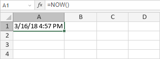

NOW funkcija
NOW funkcija je jedna od funkcija za datum i vreme. Koristi se za dodavanje trenutnog datuma i vremena u vaš proračunski list u formatu MM/dd/yy hh:mm. Ova funkcija ne zahteva argument.
Sintaksa
NOW()
Napomene
Kako primeniti NOW funkciju.
Primeri
Na slici ispod prikazan je rezultat koji vraća NOW funkcija.
